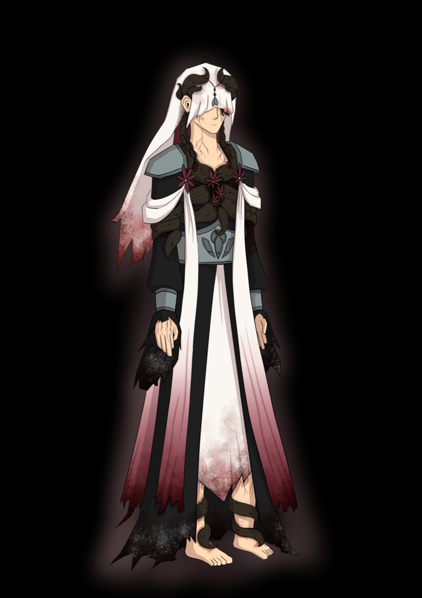
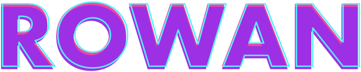
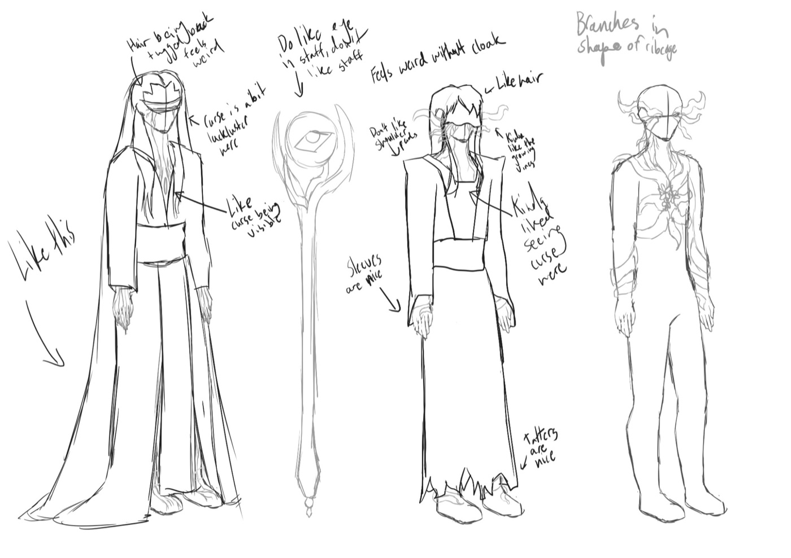
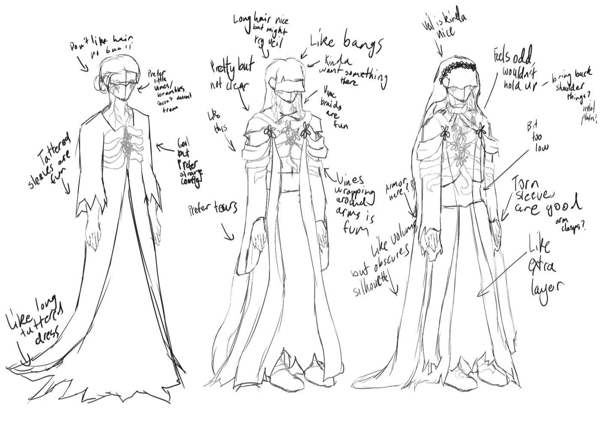
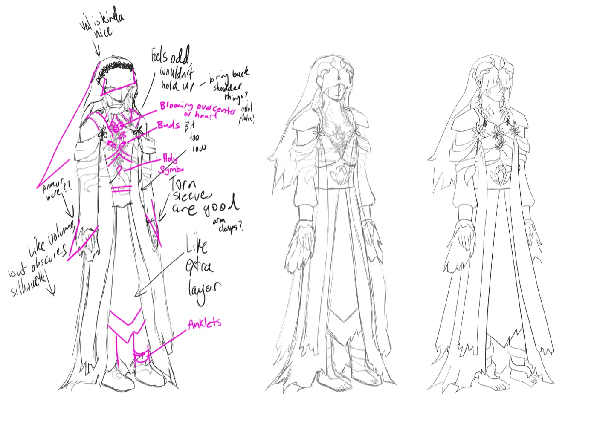
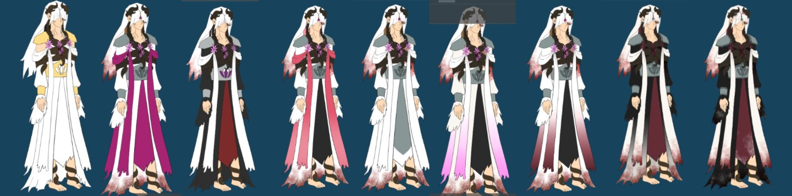

← Back to work
I've always loved TTRPGs, and whenever I'm offered to join a new group I do my best to take it, so character design is something I try to improve upon when creating any new TTRPG character. This project is about my most recent addition to my treasure trove - Rowan! A non-binary human cleric with a family curse they are trying to find a cure for, but the true nature of this curse is more than meets the eye... (especially because they're blind.) With this project, I sought to design a character where upon a glance you can spy a few keen little details about them, their environment, and perhaps, the true nature of their curse.
Skills utilised for this project: Character design - Illustration - MediBang - Collaboration - Iteration

First sketches of Rowan
For starters, I had to actually figure out who they were as I wanted their design to visually communicate some of their story. I knew I wanted a character dealing with a curse, but the nature of it was a whole other hassle to figure out, and since my friend really wanted to create a line up, I had to sketch ideas without many clear ideas of how to incorporate their specific story into it. However, I did have a few things to work with. First, I knew they were going to be a cleric, specifically a cleric that leans more into a healer aspect. Second, they had a curse, and I wanted that curse to obviously attack their eyes in some way. I also knew they were human.
What this meant for their current design
Since they're a human, that meant I didn't need to worry about any horns or ears beyond what I am used to. Furthermore, since the curse is one of the more significant aspects of their character, and since it's noted that it attacks their eyes, it is therefore something that needs to be obvious to the viewer upon looking at them. Beyond that, since they were a cleric (and I was aiming for something more magical), I would not need them to have too much in terms of armour. These were the things I was working with when I created these early designs. I also wanted there to be a bit of this idea of 'fear of the unknown', so I also looked at different ways to cover the eyes.

Second sketches of Rowan
I was originally planning to have a more detailed eye cover, but I found that I actually really loved the simplicity of the veil. And while I did like the branches growing out of the eyes, I preferred having them be smaller as I felt it created confusion as to what you were meant to look at first, and I felt like it'd be better to have the viewer notice the curse growing out of the chest first and then realise the same branches are growing where the eyes are so they can connect the two. I did think the brambles growing in a ribcage-like fashion could be interesting, but upon testing it, it didn't give the feeling of chaos that the disorganised brambles did, so I switched back to disorganised brambles.
Finalising the curse's nature and incorporating it into the design
While working through the second sketches, I ended up with a more finalised version of what Rowan's story is and what the curse's nature is - a demon curse that mutates the body and mildly controls them, with the intention being to get the recipients to accept being a partner to the demon. Important note though, nobody who has gotten this curse is aware that that's the case, thinking it's just a curse to make them servants to a demon and that this 'Love God' (who's actually the demon that cursed them) is saving them by instead bringing their souls into their domain when the curse becomes too much and they need to die, but in reality the demon is just making them become willing partners through manipulation. Because of this new understanding of this story, I started leaning into designs that provided a bit of a wedding feeling to them in order to visually communicate that aspect of their story, leaning further into veils and flowy elements.

Finalising sketches of Rowan
While I did like that the new designs had more of a wedding aspect to them, I felt like the design needed improvement in a way that I couldn't quite figure out on my own. To resolve this, I went to my friend and asked if there was anything they could think of to help resolve this design. The pink lines are all of their recommendations for how to better resolve the design, which mostly involved cleaning up the silhouette and leaning into the design being more tattered and asymmetric. With few exceptions, I actioned their advice and ended up really liking the result.
Actioning feedback and adding final details
Designing the final veil
I did change the flowers on the veil to the curse brambles because I felt flowers made the wedding aspect too obvious, and while I wanted the viewer to be able to get a feeling that there's some sort of wedding thing happening, I wanted it to be something that you don't immediately process. I also preferred the horn shaped brambles because with the knowledge that Rowan is basically being mutated to become a wedded partner to a demon, the horn shaped brambles being what holds the veil in place takes on a different meaning.
Designing the holy symbol
For the holy symbol, I was originally going to do just a flower motif, but I felt that might make the fact that the love god was actually the demon too obvious because of the curse causing flowers to bloom out of the open spot on Rowan's chest. However, I still wanted it to have flower aspects so when it is revealed that the god is actually the demon, you can have the realisation that Rowan was wearing a symbol to the demon the whole time. I decided to mix the flower idea with a seashell (a symbol associated with Aphrodite), so that it could be read interchangeably and when Rowan says it's a seashell, you're not entirely sure if that's correct because it kinda looks like a flower.
Finalising the braces and brambles
I added braces around the arms and had the brambles wrap around the ankles to give this subtle idea of shackles. The brambles sit on top of Rowan's feet because I remember hearing about a torture device that has spikes rest on the top of the feet that prevents people from running, same as how the demon is trying to prevent Rowan from escaping them.

Testing colours and extra textures
I started out with the main colours being white and gold, leaning into a divine cleric aspect while also keeping the wedding aspect. However, I found that the colours just merged together too much, leading to me trying out different colours for the clothes. I tried pinks and reds, but I kept facing the same issue of the colours just not working together. I also tested out adding some dirt, blood, and mold textures to allow for there to be a visible indication that the curse is causing active damage to the body beyond growing, along with the character being someone who's definitely in a rough situation. Since the colours were really frustrating me, I asked a friend of mine who's really good with colours (and who I could explain the backstory to because he's not in the campaign), and he gave me some pointers as to how to have the colours work together. I also decided that while I did want it to be giving some feelings of a wedding, that didn't mean it had to only be wedding because the curse is viewed as an early death sentence, and having Rowan have black on them can easily communicate that feeling. It would also make sense for it to be the dominant colour because that's the dominant viewpoint of the curse. It also kind of allows for the veil to work both as a wedding veil and as a small burial shroud. I also changed the colour of the flowers because the light pink was a bit too out of place. With a bit more testing done (which I did not get the last little bit of unfortunately), I settled on what I wanted the colours for Rowan to be.
Final design for Rowan
For the final design, I darkened the gradient on the sashes a bit more, changed the red layer on the dress to white to bring back a bit more of the wedding idea, and added some clearer thorns onto the brambles. I also added more cursed veins around the body and added some little scars where the brambles would be. I think the design does a good job at both portraying aspects of Rowan's story, while also allowing for some sense of versatility as to what the nature of the curse is because depending on what story you hear first you read it all differently, switching from a cursed cleric where the curse will mutate and kill them, to a cursed cleric where the curse will mutate them and manipulate them into being a willing partner to escape the curse (without them realising that's what's happening).